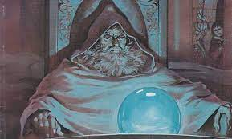

Manor Inn D&D
The Adventuring Party
A brief description of each member of the party follows.
Everin Godrick (Charlie)
Everin is a roguish half-elf, little is known of him so far.
Galifraen Amarondel (Luke)
Galifraen is an old high-elf accustomed to a nobles prestige.
Onnie Ottilie (Sarah)
Onnie is a young Aasimar, she enjoys games of fortune and helping others.
Zodius Shadowtree (Brandon)
Zodius is an peculiar gnome, versed in the magical arts. He is often observed "pondering" his orb.
Moa (Carrie)
Moa is an elven druid, she carries a bow.